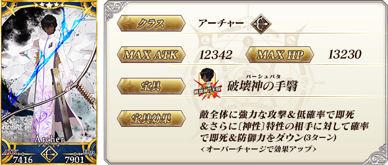
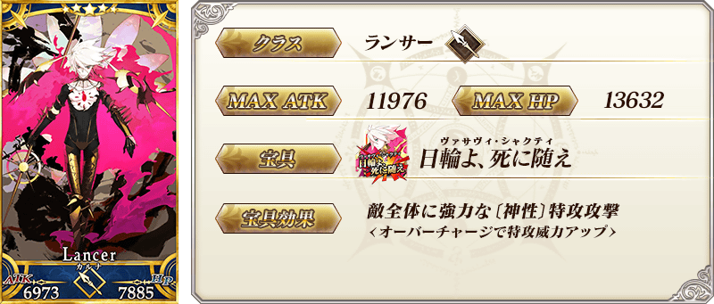
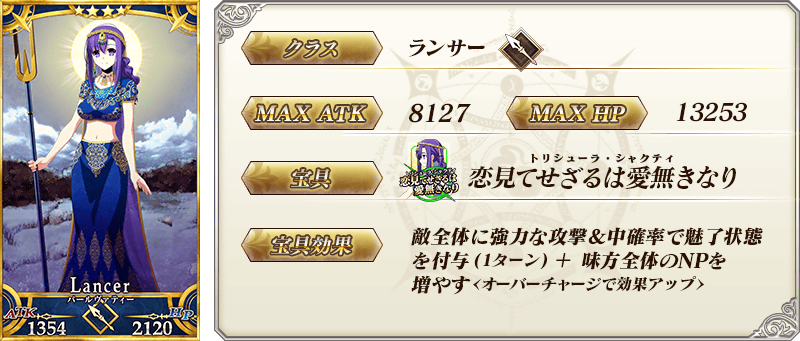
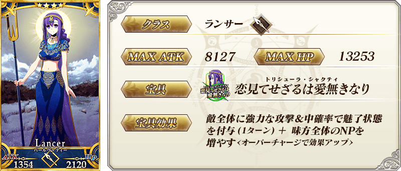
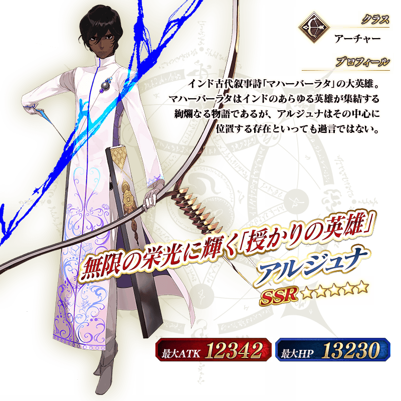

◆「聖誕節2020Pick Up2召喚(每日交替)」期間◆
期間:2020年12月23日(三) 17:00～12月31日(四) 22:59
期間限定「聖誕節2020Pick Up2召喚(每日交替)」舉辦！
從期間限定活動「榮光的聖誕老人之路 ～被封印的聖誕禮物～」關聯從者之中，下述的從者Pick Up！
▼Pick Up從者
【每日交替Pick Up】
・★5(SSR)阿周那
・★5(SSR)迦爾納(Lancer)
【常駐Pick Up】
・★4(SR)帕爾瓦蒂
另外，下述的期間限定概念禮裝常駐Pick Up！
【常駐Pick Up】
・★5(SSR)トゥインクル・スター
・★4(SR)レッド・ボックス
・★3(R)フリーズ・フレーム
裝備上述3種概念禮裝的話，在期間限定活動「榮光的聖誕老人之路 ～被封印的聖誕禮物～」中會提升活動道具的掉落獲得數。
Pick Up期間中，Pick Up對象從者與概念禮裝的出現機率提升！
詳情請在聖晶石召喚畫面左下的召喚詳細確認。
11次召喚中確定1張★4(SR)以上和確定1位★3(R)以上的從者！ ※確定★4(SR)以上包含從者和概念禮裝。
◆有關從者的注意◆
※請注意下述的從者在本召喚會是抽出對象外。
・★5(SSR)弗栗多
※下述的從者在Pick Up期間結束後仍會在故事召喚被抽出。
・★5(SSR)阿周那
・★5(SSR)迦爾納(Lancer)
・★4(SR)帕爾瓦蒂
◆有關概念禮裝的注意◆
※下述的概念禮裝，Pick Up期間中也能靠友情點數召喚獲得。
・★3(R)フリーズ・フレーム
※在自動變還設定登錄★3(R)概念禮裝的情況，下述的概念禮裝會變成自動變還的對象。
・★3(R)フリーズ・フレーム
◆「聖誕節2020Pick Up2召喚(每日交替)」Pick Up內容◆
| Pick Up期間 | Pick Up內容 | |
|---|---|---|
| 每日交替Pick Up | 全天Pick Up | |
|
12/23(三) 17:00～ 12/25(五) 22:59 |
★5 阿周那 | ★4 帕爾瓦蒂 |
|
12/25(五) 23:00～ 12/27(日) 22:59 |
★5 迦爾納(Lancer) | |
| 12/27(日) 23:00～12/28(一) 22:59 | ★5 阿周那 | |
| 12/28(一) 23:00～12/29(二) 22:59 | ★5 迦爾納(Lancer) | |
|
12/29(二) 23:00～ 12/31(四) 22:59 |
★5 阿周那 ★5 迦爾納(Lancer) |
|
※請注意會以每日交替變更Pick Up的從者。

 ※上述「★5(SSR)阿周那」的卡面為靈基再臨第1階段。
 ※上述「★5(SSR)迦爾納(Lancer)」的卡面為靈基再臨第1階段。
 



|
★★★★★SSR
|


|
★★★★SR
|


|
★★★R
|

 ※上述「★5(SSR)阿周那」的立繪為靈基再臨第1階段。
 ※上述「★5(SSR)迦爾納(Lancer)」的立繪為靈基再臨第1階段。
※上述「★5(SSR)迦爾納(Lancer)」的立繪為靈基再臨第1階段。
介紹在本召喚Pick Up的3位從者寶具演出！
在「Fate/Grand Order」官方網站內的公告中，以影片公開寶具演出，敬請確認。
【★5(SSR)阿周那】
【★5(SSR)迦爾納(Lancer)】
【★4(SR)帕爾瓦蒂】
其他還有，
・「榮光的聖誕老人之路 ～被封印的聖誕禮物～」
・聖誕節2020Pick Up召喚(每日交替)
以期間限定舉辦中！
關於詳情，請自下述橫幅確認。
■「榮光的聖誕老人之路 ～被封印的聖誕禮物～」詳細情報

■「聖誕節2020Pick Up召喚(每日交替)」詳細情報